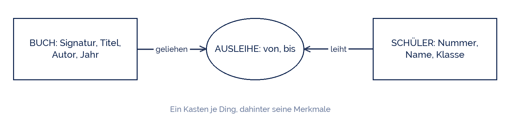

shogun
shogun
Good morning!
Nur das Schöne wird die Welt retten!
Fjodor Dostojewski
Nicht verzagen, Doc Alvers fragen!
Informatik — Klasse 9
Erst denken, dann tippen
Ein Datenmodell entwerfen — auf Papier, bevor der Rechner angeht
Nicht verzagen, Doc Alvers fragen!
Kapitel 01
Der Ausschnitt
Was gehört dazu — und was nicht?
Nicht verzagen, Doc Alvers fragen!
Eine Datenbank bildet nie alles ab
Eine Schulbibliothek hat Bücher, Regale, Staub, Licht, einen Geruch und eine Aufsicht
Für die Frage „Wer hat welches Buch?“ braucht ihr davon fast nichts
Der Teil, den ihr abbildet, heißt Ausschnitt der Wirklichkeit oder Mini-Welt
Was ihr weglasst, ist keine Schlamperei — es ist eine Entscheidung
Und die trefft ihr vor dem ersten Klick im Programm
Nicht verzagen, Doc Alvers fragen!
Drei Fragen, in dieser Reihenfolge
| Frage | Antwort für die Bibliothek |
|---|---|
| 1. Was will ich wissen? | Wer hat welches Buch, und seit wann? |
| 2. Welche Dinge kommen vor? | Buch, Schüler, Ausleihe |
| 3. Welche Merkmale braucht jedes Ding? | Buch: Signatur, Titel, Autor … |
Frage 1 zuerst — sie entscheidet über alles Weitere
Ein Merkmal, nach dem niemand je fragt, kommt nicht ins Modell
Nicht verzagen, Doc Alvers fragen!
Kapitel 02
Die Entwurfsskizze
Kästen und Linien, mehr nicht
Nicht verzagen, Doc Alvers fragen!
Die Schulbibliothek als Skizze
Jedes Ding bekommt einen Kasten, darunter stehen seine Merkmale
Die Ausleihe in der Mitte verbindet beide — sie hat eigene Merkmale: von und bis

Nicht verzagen, Doc Alvers fragen!
Woran man einen guten Entwurf erkennt
Jedes Ding hat ein Merkmal, das es eindeutig macht: Signatur, Schülernummer
Kein Merkmal steht zweimal in verschiedenen Kästen
Jede Frage aus Schritt 1 lässt sich am Entwurf beantworten
Und jedes Merkmal lässt sich einem Datentyp zuordnen
Wenn ihr einen Kasten nicht in einem Satz erklären könnt, sind es zwei Kästen
Nicht verzagen, Doc Alvers fragen!
Kapitel 03
Weglassen
Die schwerste Übung
Nicht verzagen, Doc Alvers fragen!
Bibliothek: was kommt rein, was nicht?
| Angabe | rein? | warum |
|---|---|---|
| Titel des Buchs | ja | danach wird gesucht |
| Signatur | ja | macht jedes Buch eindeutig |
| Ausleihdatum | ja | sonst weiß niemand, wer überzogen hat |
| Farbe des Einbands | nein | danach fragt niemand |
| Handynummer | nein | nicht nötig — und Datenschutz |
| Lieblingsbuch | nein | anderer Zweck, anderes Modell |
Zu jedem Nein gehört ein Grund — schreibt ihn dazu
Ändert sich die Frage aus Schritt 1, ändert sich das Modell. Nicht umgekehrt
Nicht verzagen, Doc Alvers fragen!
Ein Datenmodell entsteht auf Papier: erst die Frage, dann die Dinge, dann die Merkmale. Der Rechner kommt zuletzt.
Merksatz
Nicht verzagen, Doc Alvers fragen!
Fun Facts: Modelle
Solche Kasten-Linien-Bilder heißen Entity-Relationship-Diagramme — 1976 von Peter Chen
Entity heißt „Ding“, Relationship heißt „Beziehung“ — mehr steckt nicht dahinter
In der Oberstufe zeichnet ihr genau diese Diagramme wieder, dann mit festen Symbolen
Profis planen an einem Datenmodell Wochen — der Umbau später kostet ein Vielfaches
Der berühmteste Satz dazu: „Alle Modelle sind falsch, aber manche sind nützlich“
Nicht verzagen, Doc Alvers fragen!
Eure Aufgabe: eine eigene Mini-Welt
Zu zweit eine Mini-Welt wählen: Sportverein, Schulkiosk oder Klassenbibliothek
Frage 1 aufschreiben: Was wollt ihr aus dieser Datenbank erfahren?
Kästen zeichnen — je ein Ding, darunter höchstens fünf Merkmale
Ein Merkmal je Kasten markieren, das eindeutig ist
Mit dem Nachbarpaar tauschen: Beantwortet euer Modell die Frage des anderen?
Nicht verzagen, Doc Alvers fragen!